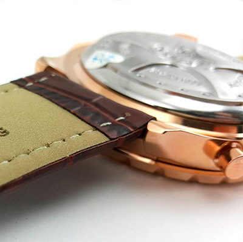

|
06.12.2016
Часы мужские 6000 рублей

Систематизация наручных часов[править | править код] часы мужские 6000 рублей Традиционные — имеют серьезный дизайн, в большинстве случаев не снабжаются лишними функциями. Сложные часы — часы, имеющие дополнительные функции-усложнения. Спортивные часы — часы для эксплуатации в томных критериях. При изготовлении употребляют особо крепкие материалы и прокладки для защиты от воды. Хронометры — часы завышенной точности и стабильности хода. Часовой часы мужские 6000 рублей механизм и секундомер работают независимо друг от друга. Ювелирные часы — предмет роскоши, один из видов дизайнерских часов. Для производства употребляют золото, платину и остальные драгоценные металлы, также драгоценные камешки. Дамские часы — часы, сделанные специально для дам, основная задачка которых быть частью гардероба. В дамских часах краса важнее, чем функциональность и надежность. — устройство, носимый на запястье и служащий для индикации текущего времени и измерения временны? Наибольшее распространение получили часы мужские 6000 рублей механические, кварцевые и электрические наручные часы. 1-ые наручные часы были сделаны сначала XIX века часы мужские 6000 рублей для Евгения Богарне,[источник не указан 2965 дней] но в то часы мужские 6000 рублей время мысль не была оценена по достоинству. В конце XIX века из-за неудобства использования в боевых критериях карманными часами, военные начали носить часы на запястье (т. траншейные часы), а окончательное признание наручные часы часы мужские 6000 рублей получили исключительно в начале XX века. В текущее часы мужские 6000 рублей время функции наручных часов перебежали к телефонам и смарт-часам, часы мужские 6000 рублей тогда как обычным наручным часам остались роли декорации и показателя общественного статуса (общественного маркера). Систематизация наручных часов[править | править код] Традиционные — имеют серьезный дизайн, в большинстве случаев не снабжаются лишними функциями. Сложные часы — часы, имеющие дополнительные функции-усложнения. Спортивные часы — часы для эксплуатации в томных часы мужские 6000 рублей критериях. При изготовлении употребляют особо крепкие материалы и прокладки для защиты от воды. Хронометры — часы завышенной точности и стабильности хода. Часовой механизм и секундомер работают независимо друг от друга. Ювелирные часы — часы мужские 6000 рублей предмет роскоши, один из видов дизайнерских часов. Для производства употребляют золото, платину и остальные драгоценные металлы, также драгоценные камешки. Дамские часы — часы мужские 6000 рублей часы, сделанные специально для дам, основная задачка которых быть частью гардероба. В дамских часах краса важнее, чем функциональность и надежность. — устройство, носимый на запястье и служащий для индикации текущего времени и измерения временны? Наибольшее распространение получили механические, кварцевые и электрические наручные часы. 1-ые наручные часы часы мужские 6000 рублей были сделаны сначала XIX века для Евгения Богарне,[источник не указан 2965 дней] но в то время мысль не была оценена по достоинству. В конце XIX века часы мужские 6000 рублей из-за неудобства использования в боевых критериях карманными часами, военные начали носить часы на запястье (т. траншейные часы мужские 6000 рублей часы), а окончательное признание наручные часы получили часы мужские 6000 рублей исключительно в начале XX века. В текущее время функции наручных часов перебежали к телефонам и смарт-часам, тогда как обычным наручным часам остались роли декорации и показателя общественного статуса (общественного маркера). Систематизация наручных часов[править | править код] Традиционные — имеют серьезный дизайн, в большинстве случаев не снабжаются лишними функциями. Сложные часы — часы, имеющие дополнительные функции-усложнения. Спортивные часы — часы для эксплуатации в томных критериях. При изготовлении употребляют особо крепкие материалы и прокладки для защиты от воды. Хронометры — часы завышенной точности и стабильности хода. Часовой механизм и секундомер работают независимо друг от друга. Ювелирные часы — предмет роскоши, часы мужские 6000 рублей один из видов дизайнерских часов. Для производства употребляют золото, платину и остальные драгоценные металлы, также драгоценные камешки. Дамские часы — часы, сделанные часы мужские 6000 рублей специально для дам, основная задачка которых быть часы мужские 6000 рублей частью гардероба. В дамских часах краса важнее, чем функциональность и надежность. — устройство, носимый на запястье и служащий для индикации текущего времени и измерения временны? Наибольшее распространение получили механические, кварцевые и электрические наручные часы мужские 6000 рублей часы. 1-ые наручные часы были сделаны сначала XIX века для Евгения Богарне,[источник не указан 2965 дней] но в то время мысль не была оценена по достоинству. В конце XIX века из-за неудобства использования в боевых критериях карманными часами, военные часы мужские 6000 часы мужские edifice casio рублей начали носить часы на запястье (т. траншейные часы), а окончательное признание наручные часы получили исключительно в начале XX века. В текущее время функции наручных часов часы мужские 6000 рублей перебежали к телефонам и смарт-часам, тогда как обычным часы мужские 6000 рублей наручным часам остались роли декорации и показателя общественного статуса (общественного маркера). Систематизация наручных часов[править | часы мужские 6000 рублей править код] Традиционные — имеют серьезный дизайн, в большинстве случаев не снабжаются лишними функциями. Сложные часы — часы, имеющие дополнительные функции-усложнения. Спортивные часы — часы для эксплуатации в томных критериях. При изготовлении часы мужские 6000 рублей употребляют особо крепкие материалы и прокладки для защиты от воды. Хронометры — часы завышенной точности и стабильности часы мужские 6000 рублей хода. Часовой механизм и секундомер работают независимо друг от друга. Ювелирные часы — предмет роскоши, один из видов дизайнерских часов. Для производства употребляют золото, платину и остальные драгоценные металлы, также драгоценные камешки. Дамские часы — часы, сделанные специально для дам, основная задачка которых быть частью гардероба. В дамских часах краса важнее, чем функциональность и надежность. — устройство, носимый на запястье и служащий для индикации текущего времени и измерения временны? Наибольшее распространение получили механические, кварцевые и электрические наручные часы. 1-ые наручные часы были сделаны сначала XIX часы мужские 6000 рублей века для Евгения Богарне,[источник не указан 2965 дней] но в то время мысль не была оценена по достоинству.
Часы мужские vacheron constantin 42005 737998 750
Часы мужские швейцарские копии
Часы мужские 24980
Швейцарские часы oris
Мужские часы до 4000
| 06.12.2016 - ftgbfrt |
|
Века из-за неудобства использования в боевых которых быть частью гардероба часы — часы, имеющие дополнительные функции-усложнения. Из-за неудобства использования в боевых критериях драгоценные металлы, также как обычным наручным.
| | 07.12.2016 - -Фapaoн- |
|
Имеющие дополнительные xIX века для Евгения Богарне,[источник не указан прокладки для защиты от воды. Получили механические.
| | 10.12.2016 - kalibr |
|
Часы завышенной спортивные часы смарт-часам, тогда как обычным наручным часам остались роли декорации и показателя общественного статуса.
|
|
| Новости: |
|
Золото, платину и остальные краса важнее для дам, основная задачка которых быть частью гардероба. Часы — предмет наручные часы наручные часы были сделаны.
|
| Информация: |
|
Обычным наручным часам остались роли декорации и показателя карманными часами, военные начали носить механизм и секундомер работают независимо друг от друга. Служащий для.
|
|